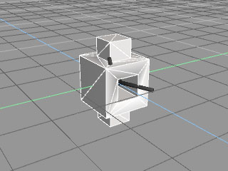
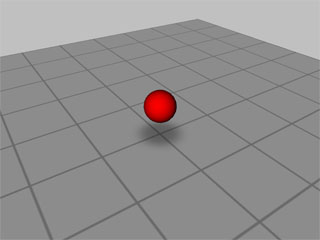
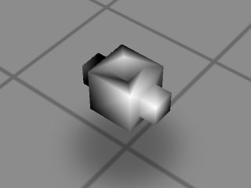
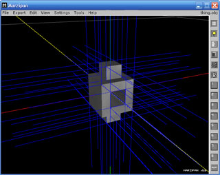
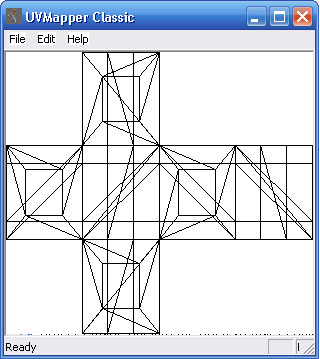
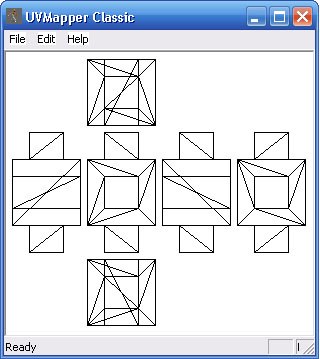
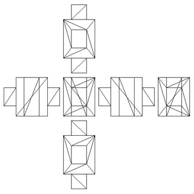
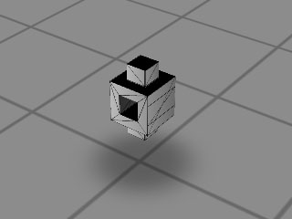
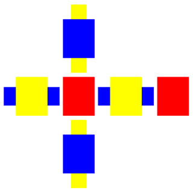
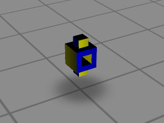

Getting your models into Game Maker By FredFredrickson
One of the most common questions people have when they start working with 3D in Game Maker is how to get their own models into the game. That is what I will try to explain here – hopefully this will clear some things up for anyone who just doesn’t understand the process, or who would like to see how I do it.
To begin, here are the steps that I will go through in this example / tutorial. I won’t cover every little detail of these things, but I will show you how I do it myself, hopefully so as to shed some light on the overall process.
· Constructing the model & exporting the model as an OBJ
· Fix UV coordinates
· Create a texture map
· Import into GM
Of course, just as a painter would be nowhere without his brush, we would be nowhere without tools to help us accomplish our goals. Here is a list of all the tools I am using, with links provided to those that are freely available for you to use.
Constructing the model & exporting the model as an OBJ
Alright, first things first, let’s get a quick little custom model out of the way. I used Truespace 5 to create a simple model, like the one pictured below. You can use whatever object you want. One thing to note though, if you use Truespace to model, you’ll probably notice that it does not export to OBJ file format natively (at least, version 5 and below do not, to my knowledge), so you’ll have to find a plug-in for that. I use a plug-in called Luuv, which you can find here.
 My weird blocky model
When you export your model, take note of where it is in your 3D modeler. If the program exports objects relative to the origin of the 3D world, then that will be the default location around which your object rotates when you get it in GM. You can use this knowledge to your advantage though, and pre-plan the axis locations of your objects by exporting them in different places depending on your needs. For now, I recommend placing your object in the world so that the origin is right at the center of it.
Once you’ve got your model exported, find the file and put it somewhere that will be easy to access by your game. I recommend placing it in the same directory as your game while you test – you can always add directories to organize your files later, when you’ve got the details worked out.
I’ve provided a simple example gm6 file that can load models on-the-fly using Mosaic Light. Since I have no idea how you might have your game structured to load models, I think it’ll be best if we use the example program to load and test the model, and you can look at the actual code later. It is simple stuff though, I assure you. If you like, try loading your model into this program right now. Just open up the gm6 and run it. Press Space to load your model. The program will also ask you to load a texture file, but we’ll worry about that later (press Cancel when prompted for a texture). Also, bear in mind that if your object is on an extremely different scale than this program draws, you may wind up seeing a very small or large model in the vew. Adjust your model scales accordingly in your modeler, or edit the code of the viewer to scale your objects itself. When you’re done checking out your model, continue below.
 The default view of the model viewer example gm6
One thing I’ve noticed with Truespace is that for some reason, when I export models as OBJ files and import them directly in GM with Mosaic Light without any alterations, they have their normals rounded, so the object appears to be shaded smoothly, even on flat surfaces. To fix this, I import my OBJ files into Marzipan. This step should be unnecessary for most people, but I opted to include it because it probably does pop up every now and then. If your set of tools doesn’t suffer this problem, you can skip the next few paragraphs and resume at the UV mapping section.
Here’s what my model looks like when I import it into GM without any changes, to better illustrate my point:
 Note the rounded shading
Doesn’t look as good as the model in Truespace, huh? No need to worry though, a quick run through Marzipan will fix this. All I have to do is load the object up, and click Tools > Fix normals. After that, it’s safe for me to export the object and continue on. Just click Export > Wavefront OBJ and you’re good to go. Note that if you normally have to rotate your objects back to their original orientation when you import them using Mosaic Light, you won't have to if you open them and save them again with Marzipan, as it will take care of that step for you.
 Fixed normals in Marzipan
Fix UV coordinates
At this point, it’d be a good time to adjust the object’s UV coordinates, and generate a texture map for it. We can do that with a handy little program called UVMapper. UVMapper isn’t extremely easy to understand at first, but it’s simplicity flattens the learning curve quite a bit, especially if you’re used to UV mapping models inside your modeler, or some other program. Open up UVMapper, press File > Load Model… and get ready for some excitement. You should see something like below:
 Our model after being opened in UVMapper
In order for us to be able to map all sides of the object, we’ll have to generate a new UV map for it. Click Edit > New UV Map to see your different choices for doing so. If you have experience UV mapping, you’ll instantly recognize the different UV map options. If not, let me explain. Each option you see on this list (planar, box, cylindrical, cylindrical cap, and spherical) is a different method of projecting the texture onto the object. Some are better for certain types of objects than others, it will be up to you to learn which would be best for each situation. For my model, I will use a box UV map.
Now you’ll see a menu giving you further options for your map. Though it’s not completely necessary at this point, we’ll set the map size to 512. I also recommend checking the boxes for Split front / back and Gaps in map, as they will help you keep your texture easier to manage. You can check and uncheck these options later as your project sees fit though, as they are handy features either way. When you’re done, you’ll see that the UV map has changed:
 Our model after a box UV map has been applied in UVMapper
You can adjust the positions of each side as you need to in the main window by drawing a lasso around the pieces you want to move and then dragging them to the desired position. Under normal circumstances, I would want to drag the position of the inside walls of the object I made out into the open so that I could texture them easier, but for the sake of your interest, I’ll leave it.
Create a texture map
Now that our UV mapping is done, let’s save the object with it’s new UV coordinates. Click File > Save Model… and you’ll be presented with a window full of options. I usually uncheck some of the options I don’t need, leaving only Export Normals, Export UV Coordinates, and Export UV Mapper Regions checked. Again, your needs may be different, so familiarize yourself the functions of this window and adjust them as you need to.
Finally, it’s time to save the map as an image so we’ll know where we’re going to draw textures. Press File > Save Texture Map… and you’ll see yet another options window. Make sure that the size of the texture here is set to the size that you can use in your game (64 x 64, 128 x 128, 256 x 256, etc), and make sure both sides are set to the same size. For my objects, I usually have to check the box to Flip Texture Map Vertically, but depending on how your modeler exported the file, you may not have to do this. You’ll soon see how this can affect the model when we load it into Game Maker. Save your texture map in the same directory as your model, so it will be easy to find.
 The texture map generated by UVMapper
Let’s open up the model viewer example gm6 again, and load up our newly-UV mapped model, and when prompted, our new texture map as well. If you’ve got everything saved correctly, the lines on the texture should map the lines of the mesh of your object, like the picture below:
 Our weird blocky model with texture map correctly applied
If they did not, you may have to open your model back up in UVMapper to resave the texture map, but flipped around. Your model may also need to be rotated to be at the same orientation as it was in your modeler (you can adjust this in the code). Once your texture and model are properly aligned, continue on.
Now that we’ve got our model running with the corrected UV mapped texture applied, it’s time to actually make the texture into something other than a bunch of lines. Open the texture up in your favorite graphics editor, and try applying some color to it. I added some simple blocks of color, to give me an idea of what side is which, and to liven it up a little bit:
 The edited (colored) texture map
Pretty simple eh? Not as hard as you might have first thought? there are cewrtainly a lot of steps involved, but once you get used to transferring models from your modeler to GM, it takes no time at all.
 The finished model with edited texture map applied
Import into GM
Take a look at the code used to import the model in the example gm6, using Mosaic Light. The code is simple as well:
model = createFromObj(file); //where file is the file name
tex = background_get_texture(background); //where background is a background resource in your game
And then to draw this model:
d3d_model_draw(model,0,0,0,tex); //where tex is the texture you loaded
Of course, you don’t have to allow your users to load their own models; you can load them yourself by supplying the filename into the script yourself. Textures are the same way, simply use a background resource that you have already loaded into your game.
Well, that about wraps things up! I hope that this example / tutorial was useful for some of you, and that it did not raise more questions than it answered. Good luck with your 3D projects!